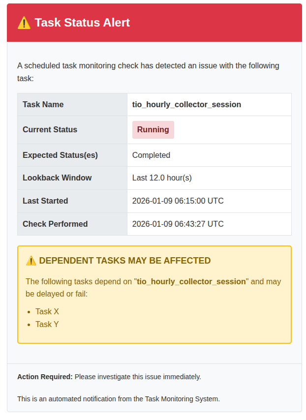

10. Task Status Monitoring System¶
10.1 Overview¶
The Task Status Monitoring System provides automated monitoring of background Celery tasks and sends email notifications when tasks don't reach expected statuses within specified time windows. This helps administrators proactively detect and respond to task failures or delays.
10.2 Key Features¶
- Automated Status Checking - Monitor multiple tasks with customizable status expectations
- Lookback Window - Configurable time window for checking task execution
- Email Notifications - HTML email alerts with detailed task information
- Dependent Task Warnings - Track and warn about downstream task impacts
- Flexible Recipients - Custom email lists or automatic superuser fallback
- Context Validation - Advanced filtering by task context type (e.g., specific ingestor types)
10.3 Configuration Format¶
The monitoring task accepts a configuration dictionary that maps task names to their monitoring settings:
{
"task_name": {
"expected_statuses": ["Completed"], # Required
"notify_to": ["admin@example.com"], # Optional
"dependent_tasks": ["Task Y", "Task Z"], # Optional
"lookback_hours": 1, # Optional, default: 1
"context_model": "gap.models.IngestorSession", # Optional (advanced)
"context_type": "Hourly Tomorrow.io" # Optional (advanced)
}
}
10.3.1 Configuration Parameters¶
| Parameter | Type | Required | Default | Description |
|---|---|---|---|---|
expected_statuses |
List[str] | Yes | - | List of acceptable task statuses (e.g., ["Completed"], ["Completed", "Running"]) |
notify_to |
List[str] | No | Superusers | Email addresses to notify. If empty or not specified, notifications are sent to all superusers |
dependent_tasks |
List[str] | No | [] |
List of task names that depend on this task. Warnings are included in notification emails |
lookback_hours |
int/float | No | 1 |
Time window (in hours) to check for task execution. Can be integer or decimal (e.g., 1.5) |
context_model |
str | No | - | Model path for context validation (e.g., "gap.models.IngestorSession") |
context_type |
str | No | - | Expected context type for filtering (e.g., "Hourly Tomorrow.io") |
10.3.2 Available Task Statuses¶
The following status values can be used in expected_statuses:
Pending- Task submitted but not queuedQueued- Task queued for executionRunning- Task currently executingCompleted- Task finished successfullyStopped- Task stopped with errorCancelled- Task was cancelledInvalidated- Task was invalidated for retry
Common configurations:
- ["Completed"] - Only accept successful completion
- ["Completed", "Running"] - Accept if completed or still running
- ["Completed", "Stopped"] - Accept both success and failure (for monitoring only)
10.4 Lookback Hours Explanation¶
The lookback_hours parameter defines the time window for checking task execution history. It determines how far back the system should look when searching for the most recent task execution.
10.4.1 How It Works¶
When a monitoring check runs:
1. Calculate the lookback threshold: current_time - lookback_hours
2. Query for the most recent task with started_at >= lookback_threshold
3. Check if the status matches expected values
4. Send notification if no task found or status doesn't match
10.4.2 Choosing Appropriate Lookback Windows¶
Guidelines:
| Task Frequency | Recommended Lookback | Example |
|---|---|---|
| Every hour | 1-2 hours | Hourly data collection tasks |
| Every 2 hours | 2-3 hours | Bi-hourly processing tasks |
| Daily | 24-25 hours | Daily report generation |
| Weekly | 168-170 hours (7+ days) | Weekly aggregation tasks |
Best Practices:
- Make it slightly longer than task interval
- For a task expected every hour, use
lookback_hours: 1.5or2 -
This accommodates normal variations in task duration
-
Account for delays
- If tasks occasionally take longer, increase the window
-
Example: A task usually completes in 30 min but sometimes takes 2 hours → use
lookback_hours: 3 -
Consider monitoring frequency
- If you check every hour, lookback of 1 hour is usually sufficient
-
If you check less frequently, increase the lookback window proportionally
-
Use decimal values for precision
lookback_hours: 1.5checks last 1.5 hours (90 minutes)- Useful for fine-tuning monitoring windows
Examples:
# Hourly task checked 5 minutes after expected completion
{
"hourly_data_sync": {
"expected_statuses": ["Completed"],
"lookback_hours": 1 # Check last hour
}
}
# Daily task with variable duration
{
"daily_report": {
"expected_statuses": ["Completed"],
"lookback_hours": 25 # Check last 25 hours (daily + buffer)
}
}
# Bi-hourly task with tolerance
{
"data_processing": {
"expected_statuses": ["Completed", "Running"],
"lookback_hours": 2.5 # Check last 2.5 hours
}
}
10.5 Creating Periodic Tasks via Django Admin¶
10.5.1 Step 1: Access Django Admin¶
Navigate to: Django Admin → Periodic Tasks → Add Periodic Task
10.5.2 Step 2: Configure Basic Settings¶
Name: Give your monitoring task a descriptive name
Example: Monitor Critical Data Collection Tasks
Task (registered): Type or select monitor_task_status
Note: You may need to type this manually if it doesn't appear in the dropdown
Enabled: ✓ Check this box to activate monitoring
10.5.3 Step 3: Configure Arguments¶
The Arguments field accepts JSON array with one dictionary containing your monitoring configuration:
[
{
"task_name_1": {
"expected_statuses": ["Completed"],
"notify_to": ["admin@example.com"],
"dependent_tasks": ["task_name_2"],
"lookback_hours": 1
},
"task_name_2": {
"expected_statuses": ["Completed"],
"lookback_hours": 2
}
}
]
Important: The JSON must be an array containing a single dictionary (note the outer [ and ]).
10.5.4 Step 4: Configure Schedule¶
Option A: Crontab Schedule
Click "Create new Crontab Schedule" or select existing:
| Example | Crontab | Description |
|---|---|---|
| Every hour at :05 | 5 * * * * |
Runs at 00:05, 01:05, 02:05, etc. |
| Every 2 hours at :05 | 5 */2 * * * |
Runs at 00:05, 02:05, 04:05, etc. |
| Daily at 10:05 AM UTC | 5 10 * * * |
Runs once daily at 10:05 AM |
| Every 30 minutes | */30 * * * * |
Runs at :00 and :30 every hour |
| Monday at 9:00 AM | 0 9 * * 1 |
Runs weekly on Monday |
Option B: Interval Schedule
For simpler intervals like "every X minutes/hours": - Every 30 minutes: Period=30, Unit=Minutes - Every 2 hours: Period=2, Unit=Hours
10.5.5 Step 5: Save¶
Click Save to activate the monitoring task.
10.6 Example JSON Configurations¶
10.6.1 Example 1: Simple Hourly Task Monitoring¶
Monitor a single hourly task, check 5 minutes after expected completion:
[
{
"hourly_data_sync": {
"expected_statuses": ["Completed"],
"notify_to": ["data-team@example.com"],
"lookback_hours": 1
}
}
]
Crontab: 5 * * * * (every hour at :05)
10.6.2 Example 2: Multiple Tasks with Dependencies¶
Monitor a data pipeline with dependent tasks:
[
{
"data_collection": {
"expected_statuses": ["Completed"],
"notify_to": ["ops@example.com"],
"dependent_tasks": ["data_processing", "data_export"],
"lookback_hours": 1
},
"data_processing": {
"expected_statuses": ["Completed", "Running"],
"dependent_tasks": ["data_export"],
"lookback_hours": 2
},
"data_export": {
"expected_statuses": ["Completed"],
"lookback_hours": 3
}
}
]
Crontab: */30 * * * * (every 30 minutes)
10.6.3 Example 3: Daily Tasks with Fallback to Superusers¶
Monitor daily tasks without specifying recipients (uses superusers):
[
{
"daily_report_generation": {
"expected_statuses": ["Completed"],
"lookback_hours": 25
},
"daily_cleanup": {
"expected_statuses": ["Completed"],
"lookback_hours": 24
}
}
]
Crontab: 5 9 * * * (daily at 9:05 AM UTC)
10.6.4 Example 4: IngestorSession with Context Validation (Advanced)¶
Monitor specific ingestor type execution:
[
{
"ingestor_session": {
"context_model": "gap.models.IngestorSession",
"context_type": "Hourly Tomorrow.io",
"expected_statuses": ["Completed"],
"notify_to": ["weather-team@example.com"],
"dependent_tasks": ["forecast_processing"],
"lookback_hours": 2
}
}
]
Crontab: 5 */2 * * * (every 2 hours at :05)
10.7 Notification Recipient Logic¶
The system determines email recipients using the following logic:
10.7.1 Priority Order¶
- Custom Recipients - If
notify_tois specified and not empty - Emails are sent to the specified addresses
-
Superusers are NOT included automatically
-
Superuser Fallback - If
notify_tois not specified or empty - System fetches all superuser emails from Django User model
-
Only superusers with valid, non-empty email addresses are included
-
No Recipients Error - If both conditions fail
- A
ValueErrorexception is raised - The full email content is logged to error logs
- Task monitoring fails with clear error message
10.7.2 Recipient Resolution Examples¶
Example 1: Custom Recipients
→ Emails sent to:admin@example.com, devops@example.com
Example 2: Empty notify_to (Superuser Fallback)
→ Emails sent to: All superusers with email addressesExample 3: No Recipients Available
→ Error:ValueError: notify_to is empty but no superuser found for task 'task_name'
10.7.3 Setting Up Superusers¶
If you want to use the superuser fallback:
Ensure the superuser has a valid email address during creation.
10.7.4 Best Practices¶
- Use explicit
notify_tofor critical tasks - Ensures specific people are notified
-
Not dependent on superuser configuration
-
Use superuser fallback for general monitoring
- Automatic recipient management
-
New superusers automatically receive notifications
-
Always have at least one notification method
- Either specify
notify_toOR ensure superusers exist - System will raise error if neither is available
10.8 Email Notifications¶
10.8.1 Email Content¶
Notification emails include:
- Task name - Identifies which task has an issue
- Current status - Actual status found (or "No execution found")
- Expected status(es) - What statuses were acceptable
- Lookback window - Time window checked (e.g., "Last 1 hour(s)")
- Execution times - When task last started/finished (if available)
- Check timestamp - When the monitoring check was performed
- Dependent tasks warning - Tasks that may be affected (if specified)
10.8.2 Email Scenarios¶
10.8.2.1 Scenario 1: Status Doesn't Match Expected¶
When a task is found but has wrong status:

Subject: [ALERT] {task_name} Status Check Failed
Key Information: - Shows actual status vs expected status - Includes execution timestamps - Provides lookback window context
10.8.2.2 Scenario 2: Task Hasn't Executed¶
When no task execution found within lookback window:

Subject: [ALERT] {task_name} Has Not Executed
Key Information: - Clear "No execution found" status - Shows the time window checked - Note about task not executing within expected timeframe
10.8.2.3 Scenario 3: Dependent Tasks Warning¶
When a task with dependencies fails:

Subject: [ALERT] {task_name} Status Check Failed
Key Information: - All standard task information - Warning box highlighting dependent tasks - List of tasks that may be delayed or fail
10.8.3 Email Subjects¶
The system uses different subject lines based on the scenario:
- Status mismatch:
[ALERT] {task_name} Status Check Failed - No execution:
[ALERT] {task_name} Has Not Executed
10.9 Email Template Customization¶
The HTML email template is located at:
10.9.1 Customizing the Template¶
- Edit the template file at the path above
- Maintain the context variables used in the template
- Test thoroughly with your email client
10.9.2 Available Template Variables¶
| Variable | Type | Description |
|---|---|---|
task_name |
str | Name of the monitored task |
current_status |
str | Current status or "No execution found" |
expected_statuses |
str | Comma-separated expected statuses (title case) |
lookback_hours |
float | Lookback window in hours |
started_at |
datetime | Last task start time (or None) |
finished_at |
datetime | Last task finish time (or None) |
check_time |
datetime | When the check was performed |
has_dependent_tasks |
bool | Whether dependent tasks are specified |
dependent_tasks |
list | List of dependent task names |
10.9.3 Example Template Customization¶
Add your company logo:
<div class="header">
<img src="https://yourcompany.com/logo.png" alt="Logo" style="height: 40px;">
<h1>⚠️ Task Status Alert</h1>
</div>
Customize colors:
Add custom footer:
<div class="footer">
<strong>Action Required:</strong> Please investigate immediately.
<br><br>
Contact: support@yourcompany.com | Internal Docs: https://wiki.yourcompany.com/monitoring
</div>
10.9.4 Testing Your Template¶
# Start Django shell
python manage.py shell
# Test the template rendering
from gap.tasks.monitoring import _send_notification
from django.utils import timezone
# This will attempt to send a test email
# Ensure you have email configured or use console backend for testing
10.10 Troubleshooting¶
10.10.1 Issue: Task Not Appearing in Django Admin Dropdown¶
Solution: Manually type monitor_task_status in the "Task (registered)" field.
The task may not appear in the dropdown initially but will work when typed manually.
10.10.2 Issue: Notifications Not Being Sent¶
Checklist:
1. ✓ Is the periodic task enabled in Django Admin?
2. ✓ Is Celery Beat running?
3. ✓ Are there superusers with email addresses (if notify_to not specified)?
4. ✓ Check Celery logs for errors
5. ✓ Verify email configuration in Django settings
Debug Test:
python manage.py shell
from gap.tasks.monitoring import monitor_task_status
config = {
"test_task": {
"expected_statuses": ["Completed"],
"lookback_hours": 24
}
}
result = monitor_task_status(config)
print(result)
10.10.3 Issue: ValueError - "notify_to is empty but no superuser found"¶
Cause: No recipients configured and no superusers exist.
Solutions:
-
Add email addresses to config:
-
Create a superuser:
What happens: The full email content is logged to error logs before the exception is raised.
10.10.4 Issue: Task Found But Status Not Matching¶
Check:
- Verify task name exactly matches BackgroundTask.task_name
- Check if lookback window is appropriate
- Review task execution logs
Query BackgroundTask directly:
from core.models.background_task import BackgroundTask
from django.utils import timezone
from datetime import timedelta
lookback = timezone.now() - timedelta(hours=1)
tasks = BackgroundTask.objects.filter(
task_name='your_task_name',
started_at__gte=lookback
).order_by('-started_at')
for task in tasks:
print(f"{task.started_at}: {task.status}")
10.10.5 Issue: No Task Found in Lookback Window¶
Possible causes: - Task hasn't run recently - Lookback window too short - Task name mismatch
Solutions:
- Increase lookback_hours
- Verify exact task name (case-sensitive)
- Check BackgroundTask table for task execution history
10.11 Advanced: Context Model Validation¶
For tasks that use context models (like IngestorSession or CollectorSession), you can validate the context type to monitor specific task variants.
10.11.1 Use Case¶
You want to monitor specifically "Hourly Tomorrow.io" ingestion, not all ingestor sessions.
10.11.2 Configuration¶
{
"ingestor_session": {
"context_model": "gap.models.IngestorSession",
"context_type": "Hourly Tomorrow.io",
"expected_statuses": ["Completed"],
"lookback_hours": 2
}
}
10.11.3 How It Works¶
- Finds most recent
ingestor_sessionBackgroundTask - Gets the associated IngestorSession instance using
context_id - Validates that
ingestor_type == "Hourly Tomorrow.io" - Only checks status if context validation passes
10.11.4 Supported Context Models¶
| Model | Validation Field |
|---|---|
gap.models.IngestorSession |
ingestor_type |
gap.models.CollectorSession |
ingestor_type |
10.12 Best Practices¶
10.12.1 1. Start Simple¶
Begin with basic monitoring for critical tasks:
{
"critical_task": {
"expected_statuses": ["Completed"],
"notify_to": ["admin@example.com"],
"lookback_hours": 2
}
}
10.12.2 2. Use Descriptive Periodic Task Names¶
Good: Monitor Hourly Data Collection Tasks
Bad: Task Monitor 1
10.12.3 3. Set Appropriate Schedules¶
- Check 5-10 minutes after expected task completion
- For hourly tasks expected at :00, check at :05 or :10
- Don't check too frequently (wastes resources)
10.12.4 4. Document Dependencies¶
Always list dependent_tasks to help responders understand impact:
10.12.5 5. Test Before Production¶
- Create test periodic task with short interval
- Verify emails are received
- Check email formatting
- Adjust configuration as needed
10.12.6 6. Monitor the Monitor¶
- Set up alerting if monitoring tasks themselves fail
- Review Celery Beat logs regularly
- Ensure monitoring tasks are running
10.12.7 7. Use Appropriate Lookback Windows¶
Refer to the 10.4 Lookback Hours Explanation section for guidelines.
10.13 Complete Example Workflow¶
10.13.1 Scenario: Monitor Daily Report Generation¶
Task Details: - Task runs daily at 8:00 AM UTC - Usually completes within 30 minutes - Creates reports used by management team - Dependent on data collection tasks
Step 1: Create Periodic Task
Name: Monitor Daily Report Generation
Step 2: Configure Arguments
[
{
"generate_daily_report": {
"expected_statuses": ["Completed"],
"notify_to": ["reports-team@example.com", "management@example.com"],
"dependent_tasks": ["send_report_emails", "update_dashboard"],
"lookback_hours": 2
}
}
]
Step 3: Set Schedule
Crontab: 35 8 * * * (8:35 AM UTC - 35 minutes after expected completion)
Step 4: Enable and Save
✓ Check "Enabled" box and save
Step 5: Monitor Results
- Check Celery logs for monitoring execution
- Verify emails are received when tests fail
- Adjust
lookback_hoursif needed